About Callum
Callum Barter has been busy working as an Engineer/Producer for the last 14 years. After 4 years as senior Engineer & Manager @ Newmarket Studios in Melbourne, Australia, 2018 brings Callum to be based out of Los Angeles.
As studio manager and chief engineer at Melbourne’s Newmarket Studios, Callum has brought the studio an impressive roster of Australia’s top artists, including four time ARIA Award winner and Grammy nominee Courtney Barnett, as well as ARIA nominated duo Big Scary. With Callum at the helm, Newmarket has also opened doors to chart topping international talent, including American indie rock icon Kurt Vile, and UK’s rising electro-soul artist and producer, Sampha.
Read Callum's full biography here.
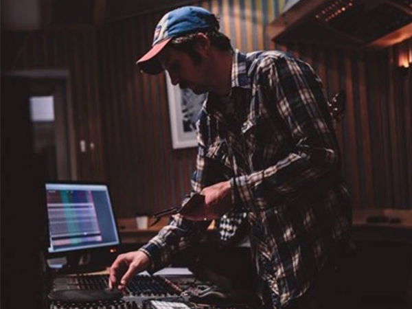
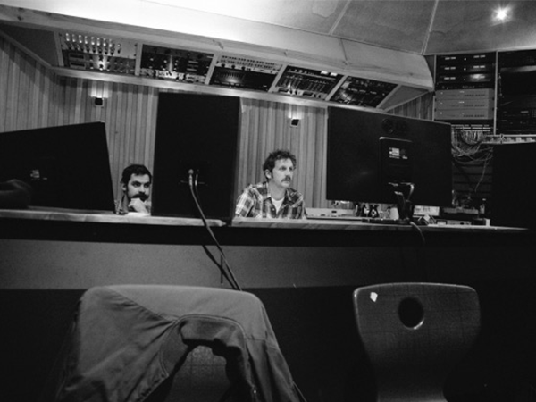
 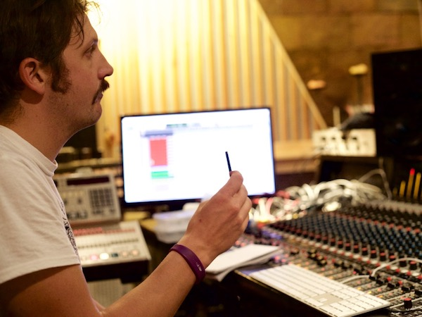
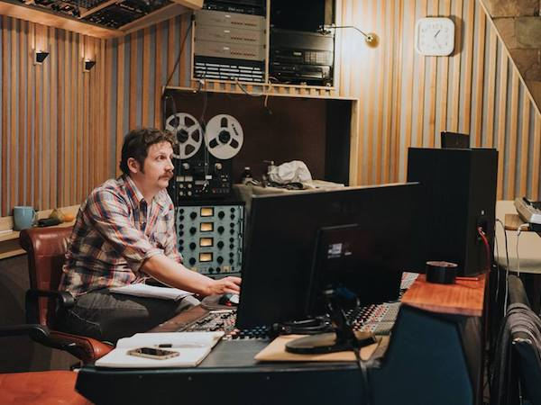
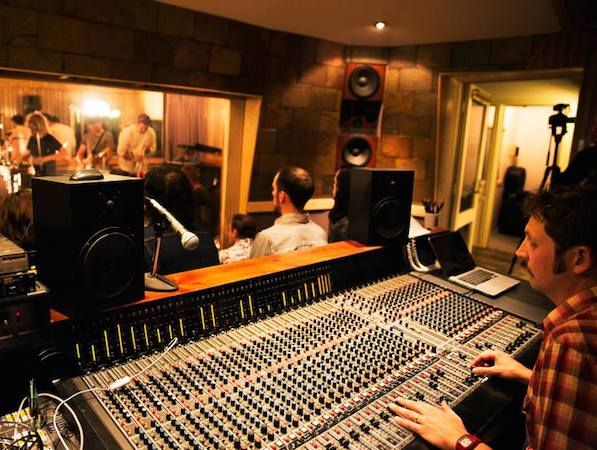
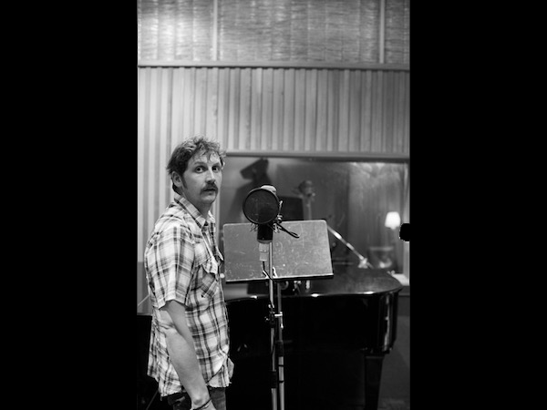
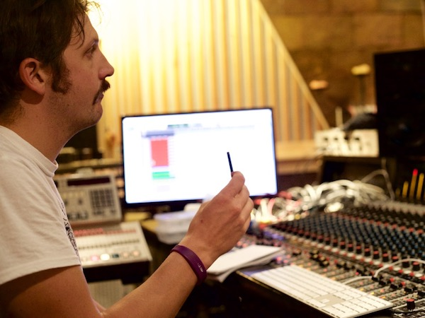
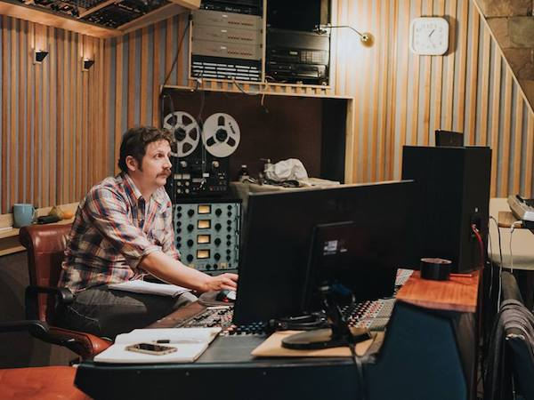
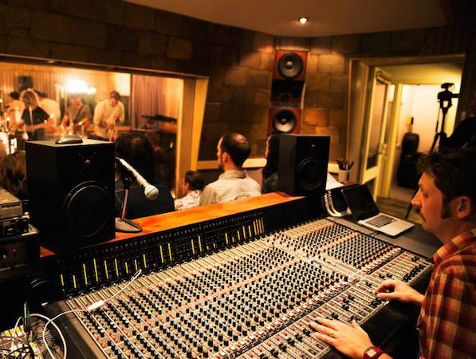
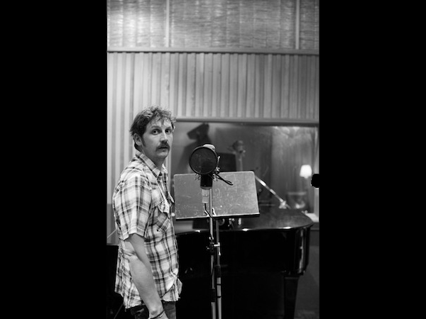
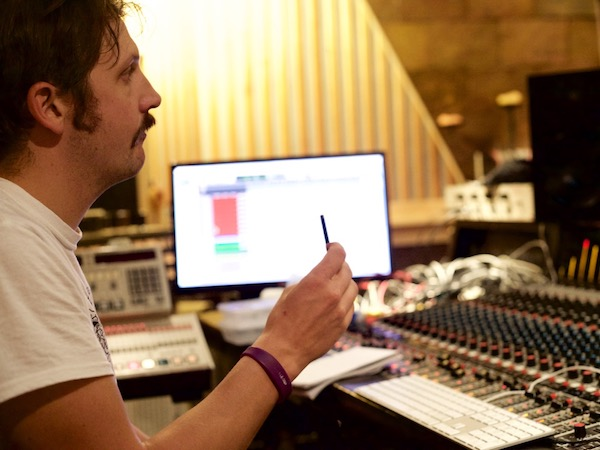
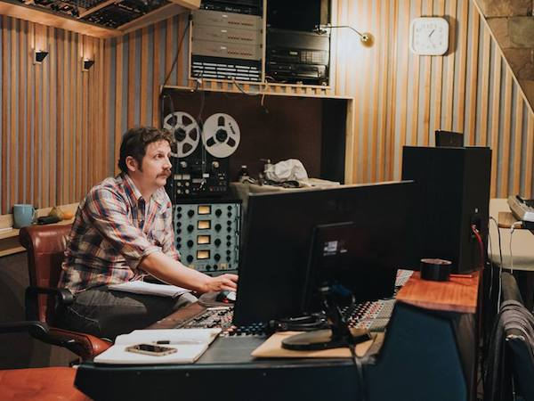
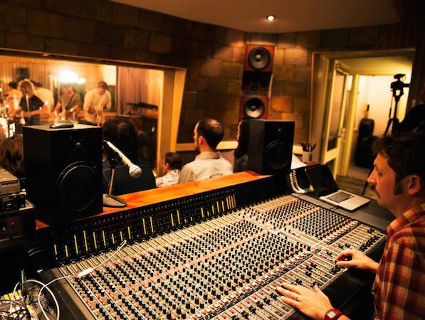
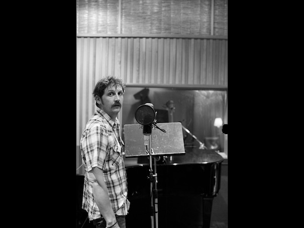